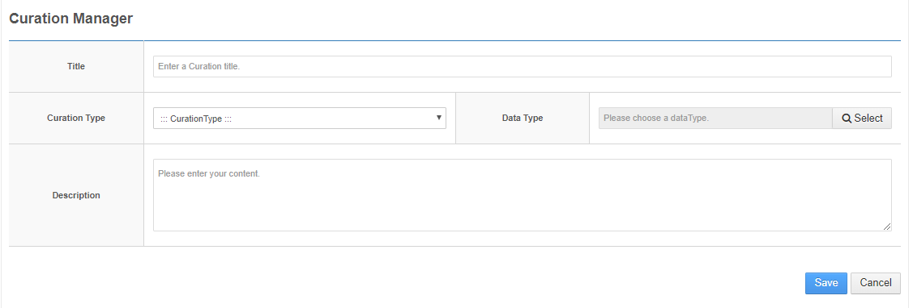
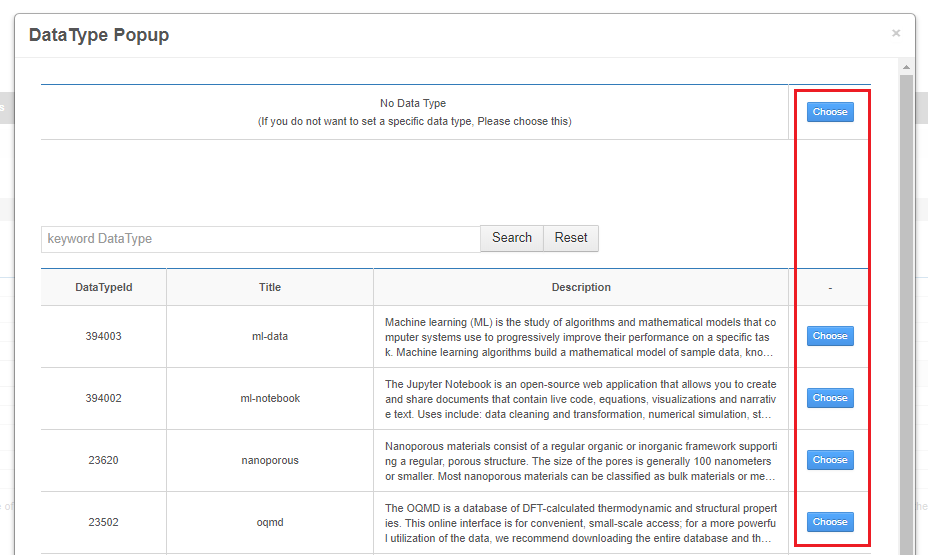
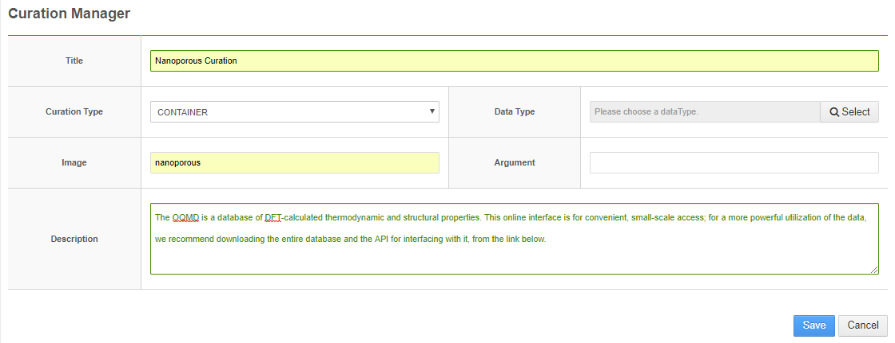
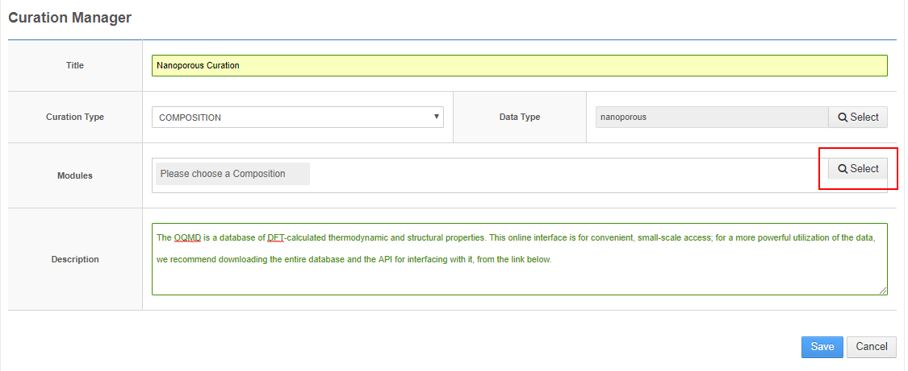
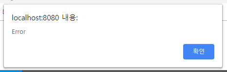
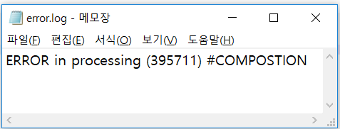

사이트 상단의 Tool - Curation Manager로 이동하여 큐레이션 목록 하단의 Create버튼을 클릭합니다.

기본적으로 데이터 처리 모듈은 Title, Curation Type, Data Type, SubCurationModule, argument, Description 항목을 입력해야 합니다.
Curation Type는 NO Curation, SIMPLE, CONTAINER, COMPOSITION 으로 구성되며, SIMPLE은 Curation 처리 코드를 직접 타이핑할 수 있고, CONTAINER는 Docker Image로 제작한 처리 모듈을 이용하며, COMPOSITION은 이렇게 등록된 Curation 모듈들을 선택하여 다중 처리를 하는 목적으로 사용됩니다.
SIMPLE 타입 모듈 생성하기
Curation Type을 SIMPLE로 선택하면 아래와 같이 Sub Curation Module 항목이 나타나며 오른쪽 Example와 같이 직접 데이터 처리 코드를 작성할 수 있는 폼이 나타납니다.
Data Type 항목의 Select 버튼을 클릭하면 DataType Popup 페이지가 나타나며, 모듈의 Data Type를 선택할 수 있습니다.(Data Type은 한가지만 선택 가능합니다.)
아래와 같이 해당하는 Data Type를 Choose 버튼으로 선택합니다.

Save 버튼을 클릭하면 아래와 같이 Edit 화면으로 전환 되는데, 여기서 Validate 버튼을 클릭하여 코드의 유효성 검증을, TEST 버튼을 클릭하여 코드의 테스트를, Delete 버튼을 클릭하여 모듈의 삭제를 진행할 수 있습니다.
CONTAINER 타입 모듈 생성하기
Cration Type으로 CONTAINER를 선택하면 아래와 같이 Docker Image와 Argument의 입력이 가능한 입력폼이 나타납니다.

Data Type 항목의 Select 버튼을 클릭하면 DataType Popup 페이지가 나타나며, 모듈의 Data Type를 선택할 수 있습니다.(Data Type은 한가지만 선택 가능합니다.)
아래와 같이 해당하는 Data Type를 Choose 버튼으로 선택합니다.
아래와 같이 모든 데이터를 입력 후, Save 버튼을 클릭하여 모듈을 저장합니다.
COMPOSTION 타입 모듈 생성하기
Curation Type을 COMPOSITION으로 선택하면 아래와 같이 Modules 항목을 선택할 수 있는 폼이 나타납니다.
Data Type 항목의 Select 버튼을 클릭하면 DataType Popup 페이지가 나타나며, 모듈의 Data Type를 선택할 수 있습니다.(Data Type은 한가지만 선택 가능합니다.)
아래와 같이 해당하는 Data Type를 Choose 버튼으로 선택합니다.
Modules 항목은 오른쪽 Select 버튼을 클릭하여 이미 등록된, 큐레이션 모듈들을 다중으로 선택할 수 있습니다.

아래와 같이 Curation Type을 COMPOSITION으로 선택하면 아래와 같이 Modules 항목이 나타나는데, 오른쪽 Select 버튼을 클릭하여 이미 등록된, 적용할 모듈들을 다중으로 선택할 수 있습니다.
Composition Popup에서 모듈을 선택하면 아래와 같이 나타나는데, X 아이콘을 클릭하여 선택한 모듈을 삭제할 수 있습니다. 아래 Save 버튼을 클릭하여 모듈을 저장합니다.
검증 및 시험
1. SIMPLE 타입 모듈 시험
SIMPLE 타입 모듈의 상세 보기에서 하단 TEST 버튼을 클릭하여 시험을 진행할 수 있습니다.
수정 화면에서는 Validate, TEST 버튼을 클릭하여 검증 및 시험을 진행할 수 있습니다. TEST 버튼을 이용한 시험은 상세보기 시험과 동일하게 진행되며, Validate, TEST 순서 없이 검증 및 시험을 진행할 수 있으며, 검증이 실패한 경우에는 시험을 진행할 수 없습니다.
TEST 버튼을 클릭하면, TEST할 시뮬레이션 데이터를 선택할 수 있는 Dataset Popup 페이지가 나타납니다. 우측 Choose 버튼을 클릭하여 선택합니다.
선택한 시뮬레이션 데이터로 TEST를 진행하며, 성공이나 실패 시에 아래와 같은 Success/Error Dialog 창이 나타납니다.
SUCCESSFAILS
TEST 후 아래와 같은 ViewMetadata Popup 창이 나타나고, 성공 시 처리된 데이터들을 더블클릭하여 다운로드한 후에 파일을 열어서 데이터를 확인할 수 있습니다.
dm.json 파일을 내려받아 열어보면 아래와 같은 데이터를 확인할 수 있습니다.
결과 팝업의 DescriptiveMetadata 항목과 같은 데이터임을 확인할 수 있습니다.
TEST 실패 시에 아래와 같은 ViewMetadata Popup 창이 나타나고, error.log를 더블클릭하여 다운로드한 후에 파일을 열어서 Error 로그를 확인할 수 있습니다.
아래와 같이 Error 로그를 확인할 수 있습니다.
수정 화면 검증
아래 화면은 수정 화면 하단의 Validate 버튼을 이용하여 검증 후 성공 시 라인번호가 초록색으로 변경 됩니다.
아래 화면은 수정 화면 하단의 Validate 버튼을 이용하여 검증 후 실패시 라인번호 빨간색으로 표기되며 오류 내용을 툴팁에서 확인할 수 있습니다.(검증이 실패할 경우 TEST 버튼을 이용한 시험은 진행할 수 없습니다.)
2. CONTAINER 타입 모듈 시험
CONTAINER 타입 모듈의 상세 보기에서 하단 TEST 버튼을 클릭하여 시험을 진행할 수 있습니다.
TEST 버튼을 클릭하면, TEST할 시뮬레이션 데이터를 선택할 수 있는 Dataset Popup 페이지가 나타납니다. 우측 Choose 버튼을 클릭하여 선택합니다.
선택한 시뮬레이션 데이터로 TEST를 진행하며, 성공이나 실패 시에 아래와 같은 Success/Error Dialog 창이 나타납니다.
SUCCESSFAILS
TEST 실패 시에 아래와 같은 ViewMetadata Popup 창이 나타나고, error.log를 더블클릭하여 다운로드한 후에 파일을 열어서 Error 로그를 확인할 수 있습니다.
아래와 같이 Error 로그를 확인할 수 있습니다.
TEST 성공 시에 아래와 같은 ViewMetadata Popup 창이 나타나고, 처리된 데이터들을 더블클릭하여 다운로드한 후에 파일을 열어서 데이터를 확인할 수 있습니다.
md.json 파일을 내려받아 열어보면 아래와 같은 데이터를 확인할 수 있습니다.
수정 화면 검증
아래 화면은 수정 화면 하단의 Validate 버튼을 이용하여 검증 후 성공이나 실패 시에 아래와 같은 Success/Error Dialog 창이 나타납니다.
SUCCESSFAILS
3. COMPOSTION 타입 모듈 시험
COMPOSITION 타입 모듈의 상세 보기에서 하단 TEST 버튼을 클릭하여 시험을 진행할 수 있습니다. (SubCurationModule 항목의 OQMD Simple Curation, OQMD Curation 모듈 순으로 데이터 처리를 진행합니다.)
TEST 버튼을 클릭하면, TEST할 시뮬레이션 데이터를 선택할 수 있는 Dataset Popup 페이지가 나타납니다. 우측 Choose 버튼을 클릭하여 선택합니다.
COMPOSITION Curation Type은 현재 SIMPLE 타입과 CONTAINER 타입 두 가지 조합으로 구성이 가능하며, SubCurationModule 항목의 순서데로 순차적으로 데이터를 처리합니다.
선택한 시뮬레이션 데이터로 TEST를 진행하며, 성공이나 실패 시에 아래와 같은 Success/Error Dialog 창이 나타납니다.
SUCCESSFAILS
TEST 실패 시에 아래와 같은 ViewMetadata Popup 창이 나타나고, error.log를 더블클릭하여 다운로드한 후에 파일을 열어서 Error 로그를 확인할 수 있습니다.
아래와 같이 Error 로그를 확인할 수 있습니다.

TEST 성공 시에 아래와 같은 ViewMetadata Popup 창이 나타나고, 처리된 데이터들을 더블클릭하여 다운로드한 후에 파일을 열어서 데이터를 확인할 수 있습니다.